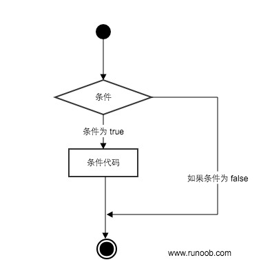

Python3 Control de condiciones
Las declaraciones condicionales de Python determinan el bloque de código a ejecutar mediante el resultado de ejecución (True o False) de una o más declaraciones.
Puede comprender fácilmente el proceso de ejecución de las declaraciones condicionales mediante la siguiente figura:

Proceso de ejecución del código:

Palabras clave de juicio de condiciones
| Palabra clave / Función | Descripción | Ejemplo |
|---|---|---|
if |
Declaración de juicio de condición, ejecuta el bloque de código cuando la condición es True | if x > 0: |
elif |
Rama de juicio de múltiples condiciones (else if) | elif x == 0: |
else |
Se ejecuta cuando no se cumplen todas las condiciones | else: |
pass |
Declaración vacía, utilizada como marcador de posición para garantizar una sintaxis completa | if x > 0: pass |
match |
Coincidencia de patrones estructurales (Python 3.10+, similar a switch) | match x: case 1: ... |
Declaración if
La forma general de la declaración if en Python es la siguiente:
- Si "condition_1" es True, se ejecutará el bloque de declaraciones "statement_block_1"
- Si "condition_1" es False, se evaluará "condition_2"
- Si "condition_2" es True, se ejecutará el bloque de declaraciones "statement_block_2"
- Si "condition_2" es False, se ejecutará el bloque de declaraciones "statement_block_3"
En Python se utilizaelifen lugar deelse if, por lo que las palabras clave de la declaración if son:if – elif – else。
Nota:
- 1. Después de cada condición se debe usar dos puntos:, indicando que a continuación está el bloque de declaraciones a ejecutar cuando se cumpla la condición.
- 2. Utilice la indentación para dividir bloques de declaraciones; las declaraciones con el mismo número de indentación forman juntas un bloque.
- 3. En Python no hayswitch...casedeclaración, pero en la versión Python 3.10 se añadiómatch...case, y es similar en funcionalidad, consulte a continuación.
Demostración en Gif:

Ejemplo
El siguiente es un ejemplo simple de if:
Ejemplo
Ejecute el código anterior, el resultado es:
1 - if 表达式条件为 true 100 Good bye!
Del resultado se puede ver que, como la variable var2 es 0, la declaración dentro del if correspondiente no se ejecutó.
El siguiente ejemplo demuestra el cálculo y juicio de la edad de un perro:
Ejemplo
Guarde el script anterior en el archivo dog.py y ejecútelo:
$ python3 dog.py 请输入你家狗狗的年龄: 1 相当于 14 岁的人。 点击 enter 键退出
A continuación se muestran los operadores de operación comúnmente utilizados en if:
| Operador | Descripción |
|---|---|
< |
Menor que |
<= |
Menor o igual que |
> |
Mayor que |
>= |
Mayor o igual que |
== |
Igual a, compara si dos valores son iguales |
!= |
No igual a |
Ejemplo
El resultado del ejemplo anterior:
False False
El archivo high_low.py demuestra la comparación de números:
Ejemplo
Ejecute el script anterior, el resultado del ejemplo es el siguiente:
$ python3 high_low.py 数字猜谜游戏! 请输入你猜的数字：1 猜的数字小了... 请输入你猜的数字：9 猜的数字大了... 请输入你猜的数字：7 恭喜，你猜对了！
Anidamiento if
En declaraciones if anidadas, se puede colocar una estructura if...elif...else dentro de otra estructura if...elif...else.
if 表达式1:
语句
if 表达式2:
语句
elif 表达式3:
语句
else:
语句
elif 表达式4:
语句
else:
语句
Ejemplo
Guarde el programa anterior en el archivo test_if.py, ejecútelo y el resultado es:
$ python3 test.py 输入一个数字：6 你输入的数字可以整除 2 和 3
match...case
Python 3.10 añadió match...casela evaluación de condiciones, ya no es necesario usar una serie deif-elsepara juzgar.
El objeto después de match se compara secuencialmente con el contenido después de case; si la coincidencia es exitosa, se ejecuta la expresión coincidente; de lo contrario, se omite directamente._Puede coincidir con todo.
SVG: Diagrama de flujo de ejecución de match...caseEl formato de sintaxis es el siguiente:
match subject:
case <pattern_1>:
<action_1>
case <pattern_2>:
<action_2>
case <pattern_3>:
<action_3>
case _:
<action_wildcard>case _:Similar al de C y Javadefault:, cuando otros case no puedan coincidir, coincide con este, asegurando que siempre coincidirá.
Ejemplo
match status:
case 400:
return "Bad request"
case 404:
return "Not found"
case 418:
return "I'm a teapot"
case _:
return "Something's wrong with the internet"
print(http_error(400))
print(http_error(404))
print(http_error(418))
print(http_error(500))
El anterior es un ejemplo que genera códigos de estado HTTP; el resultado para varios códigos de estado es:
Bad request Not found I'm a teapot Something's wrong with the internet
Un case también puede establecer múltiples condiciones de coincidencia; las condiciones se separan con|separadas por, por ejemplo:
...
case 401|403|404:
return "Not allowed"
SVG: | Ilustración de coincidencia de múltiples condiciones
Ejemplo
match status:
case 200:
return "OK - Solicitud exitosa"
case 301 | 302:
return "Redirect - Redirección"
case 401 | 403 | 404:
return "Not allowed - Sin permisos o no encontrado"
case 500 | 502 | 503:
return "Server Error - Error del servidor"
case _:
return "Unknown status - Código de estado desconocido"
for code in [200, 301, 403, 500, 418]:
print(f"Código de estado {code}: {check_permission(code)}")
match...caseConsulte más contenido en:Declaración match-case de Python
Otras extensiones